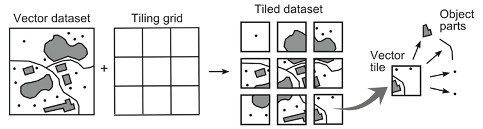
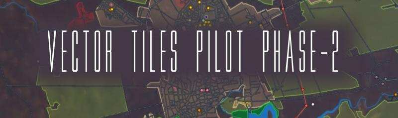

Welcome.
I'm David Lacroix, Geo data engineer @MeilleursAgents
How is it being done ?
the realm of vector tiles
 Source Gaffuri (2012)light, fast and adaptable
 Source Mapzen
Source Mapzen
a standard architecture
a bright future ahead
 OGC - Vector Tiles Pilotour stack
Postgres |
↦ | Flask |
↦ | MapboxGL |
your only friend
 Find more information in that great tutorial
Find more information in that great tutorial
a calf on steroid
- 2.4.0: Introduction of ST_AsMVT()
- 2.5.0: Parallel implementation
- 3.0.0: Performance boost + ST_TileEnvelope()
Read more from Paul Ramsey
one less middleware
your web application is your tile server
alternatively see postile#madewithmapbox
mapbox vector tile specification
try it out
sudo docker-compose up -da map speaks louder than words
This is our webapp served by the Flask server: http://localhost:8001/map_emptygeojson data is trivial
map.addLayer({
"id": "haussmann",
"type": "fill",
"source": {
"type": "geojson",
// path to geojson (text, file, url...)
"data": "static/resource/haussmann.geojson"
},
'paint': {
'fill-color': '#088',
'fill-opacity': 0.8
}
});
tiles a little less
http://localhost:8001/my-layer/{z}/{x}/{y}
# z: zoom level (0-22)
# x: tilegrid X coordinate
# y: tilegrid Y coordinate
flask: serving tiles
flask: requesting tile
from tile to ground coordinates
 Read more from Paul Ramsey
Read more from Paul Ramsey
postgis: building tile
add custom tile layer
map.addLayer({
"id": "my-layer",
"type": "fill",
"source": {
"type": "vector",
"tiles": ["http://tile-server/my-layer/{z}/{x}/{y}"],
"minzoom": 10,
"maxzoom": 21
},
"source-layer": "my-layer",
'paint': {
'fill-color': '#088',
'fill-opacity': 0.8
},
});